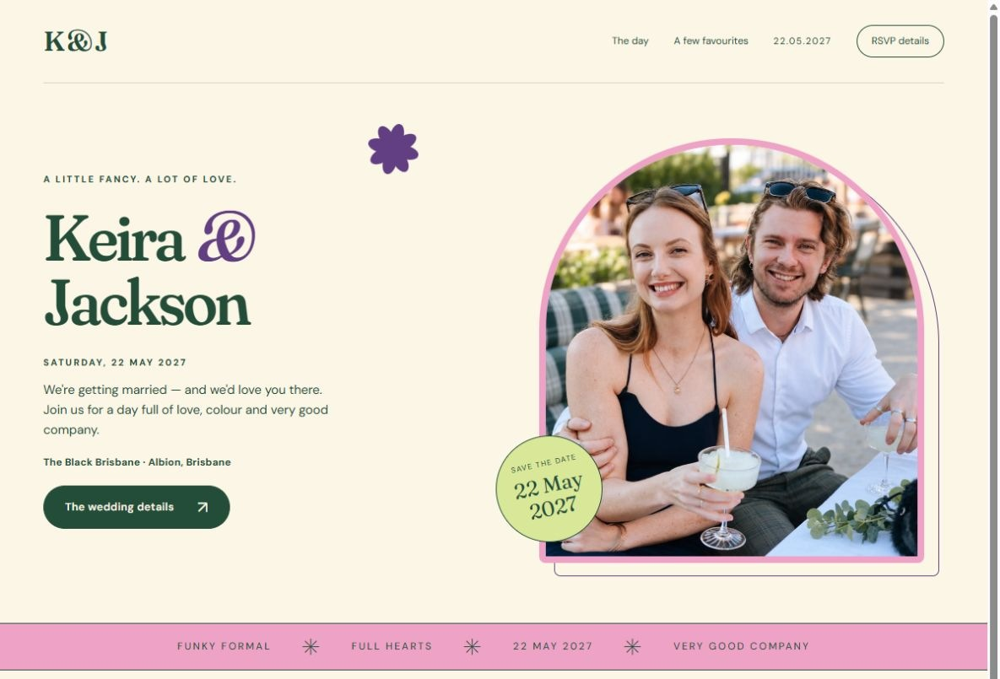
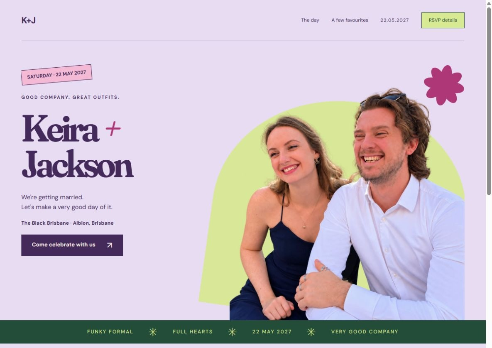
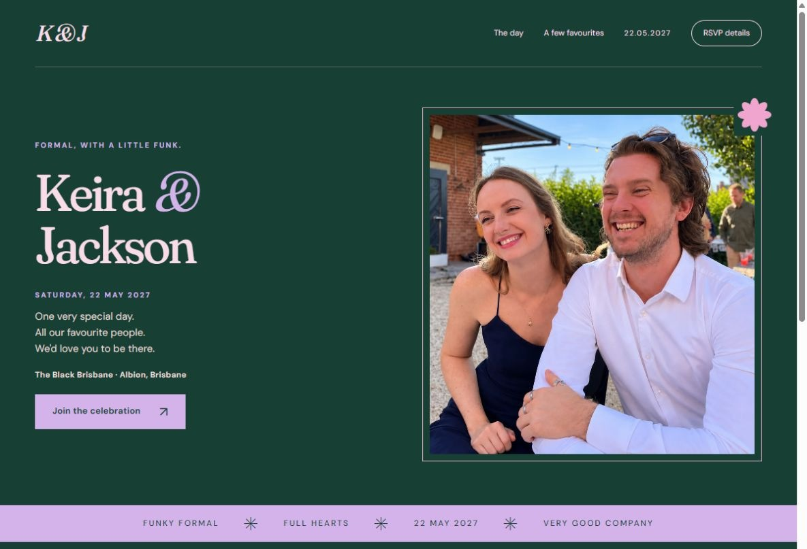

A little retro, a little romantic. Cream paper, playful serif lettering and an arched photograph, with colour in all the right places.
Three ways to bring green, purple and pink to your wedding. Each direction pairs a responsive homepage with a matching email invitation, using your own photographs.

A little retro, a little romantic. Cream paper, playful serif lettering and an arched photograph, with colour in all the right places.

The boldest of the three. Lilac, lime and pink, oversized type and a cutout portrait give the celebration a playful editorial feel.

A more dressed-up direction. Deep green, fine pink borders and elegant lavender lettering, with just enough unexpected colour.
Coordinated invitations with a website button. These are review drafts: the preview buttons open the matching homepage, and the email templates are ready for the permanent link when it is chosen.